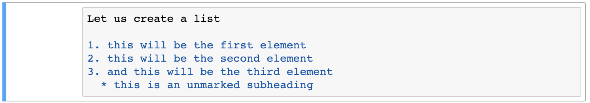

3. Celdas de markdown¶
Traducción por Dr. Alejandra Rougon (UNAM ENES León, México)
Mira este video de 9:51 a 19:07
# Para reproducir el siguiente tutorial, presiona shift + enter
# Para español, haga click en configuración,
# seleccione "español" debajo de los subtítulos.
# Traducción por Dr. Alejandra Rougon (UNAM ENES León, México)
from IPython.display import YouTubeVideo
from datetime import timedelta
start=int(timedelta(hours=0, minutes=9, seconds=51).total_seconds())
end=int(timedelta(hours=0, minutes=19, seconds=7).total_seconds())
YouTubeVideo("FrDYpLVuTkQ",start=start,end=end,width=640,height=360)
La siguiente es una transcripción del video.
Aprendamos sobre el otro tipo de celda, que es markdown. Podemos convertir entre celdas de código y markdown presionando “y” o “m”. Markdown es un tipo de código, pero es un tipo de código que te devuelve un texto muy bien formateado cuando ejecutas una celda. Entonces, digamos que queremos crear un bonito tipo de encabezado que podamos usar. Cuando se trata de una celda de markdown, un hashtag # será un encabezado, mientras que en una celda de código un hashtag se usa para comentarios y Python lo ignorará. Por lo tanto, es importante saber si tienes una celda de markdown o de código.
Un hashtag te dará un encabezado muy grande, dos hashtags te darán uno más pequeño, tres hashtags te darán un título aún más pequeño. Y luego, cuatrohashtags te darán un título aún más pequeño. Entonces puedes elegir el estilo de título que desees.

Heading 1¶
Heading 2¶
Heading 3¶
Heading 4¶
Puede utilizar guiones bajos “_”, por ejemplo, para crear una línea divisoria usando markdown. Espero que puedas ver que esa es una línea divisoria muy tenue.

Puedes escribir mucho texto y puedes usar cursiva y negrita usando asteriscos. Un asterisco “*” lo pondrá en cursiva. Entonces ponemos un asterisco antes y después del texto que queremos que esté en cursiva. Y luego, cuando tu presiones shift + enter, entonces el texto estará en cursiva. También puedes utilizar un guión bajo “_” para crear cursiva, y creamos esto con markdown, y usando guiones bajos obtenemos eso también. Dos asteriscos “**” o dos guiones bajos “__” estarán en negrita. Entonces podemos usar dos y esto será negrita. Puedes poner dos espacios e ingresar y obtendrás una nueva línea. Recuerda que también podemos usar guiones bajos. Dos de ellos te darán negrita. Y luego incluso puedes hacer tres asteriscos. Entonces tres asteriscos serán cursiva y negrita. O tres guiones bajos. Esto también estará en cursiva y negrita, con tres guiones bajos. Y puedes ejecutar estas celdas y así es como se pone en negrita o negrita y cursiva.
I am writing some text and want to write in italics
(Remember, use two spaces after a line to create a newline)
this will be italics
this will be bold
this will be bold also
this will be italic bold
this will be italic bold too
También puedes hacer listas. Entonces vamos a crear una lista. Y presionas enter. Para hacer una lista, puede ser una lista numerada y puede simplemente poner “1”, “.”, espacio (“1.”) y simplemente comienza a crear los elementos. Este será el primer elemento. Y luego puedes hacer 2 punto espacio (“2. “), este será el segundo, y tres punto espacio (“3.”), el tercero. Y puedes utilizar dos espacios y un asterisco (” *”) para crear un subtítulo sin marcar. Entonces, si presionamos shift + enter, puedes ver que tenemos una lista numerada e incluso tenemos un subtítulo.

Let us create a list
this will be the first element
this will be the second element
and this will be the third element
this is an unmarked subheading
Incluso puedes crear una lista sin numerar con solo usar el asterisco. Asterisco espacio (“* “), primero; asterisco espacio(“* “), segundo; y asterisco espacio (“* “), tercer elemento. Así es como obtienes una lista sin numeración.

an element of an unnumbered list
the second element of an unnumbered list
the final element of an unnumbered list
Y puedes crear enlaces también. Entonces, para crear un enlace, puedes decir “for the link, click here” y puedes poner el texto que quieras
que esté hipervinculado dentro de los corchetes (“[ ]”). Entonces haz clic “[aquí]” y podemos decir http://google.com entre paréntesis (“( )”) y puedes ver que se muestra en rojo. Entonces, si presionamos shift+ enter y hacemos clic ahí, estaremos en google. Así es como creas
un enlace.

for the link, click here
Así que eso es solo lo básico: así es como se usan las celdas de código y así es como se usa markdown. Asegúrate de darle un nombre a tu notebook. Siempre puedes guardar donde quiera que estés y crear un punto de control con solo hacer clic en el icono de guardar. Siempre puedes descargar tu notebook si has completado una tarea. Quieres descargarlo y enviarlo a tu instructor ahora: Ve a “File”, “Download as” y siempre estamos trabajando con notebooks de ipython y tienen esta extensión muy larga que es “.ipynb” para I PYthon NoteBook. “i”, “p”, “y”, “n”, “b” y simplemente ve a “Archivo”, “Download as”, tu notebook y debería irse a tu carpeta de Descargas.
Habrá varios notebooks que tendrás como tareas y que deberás cargar en Jupyter para que realices los ejercicios y repasarlos como una lección. Puedes simplemente hacer clic en “upload” aquí y puedes seleccionar el archivo, un cuaderno ipython (.ipynb) que desea cargar.

Y espero que ahora puedas ver algunas de las cosas realmente positivas que surgen al usar un Jupyter notebook. Cuando tengas estas lecciones, puedes hacer doble clic en las celdas mismas y puedes ver todo el código que hay detrás de él, aquí puedes ver todo el markdown que entra para dar formato de todo el texto. Tendrás celdas en las que podrás poner tus respuestas para estas lecciones y también habrá videos de youtube incrustados que repasarán estas lecciones.
Notan que estos videos en realidad también se hicieron con cuadernos de Jupyter. Y estos videos están pensados para que los sigas y vayas a tu propio ritmo. Y si alguna vez necesitas volver a revisar algo, haz una pausa. Puedes llevarte todo el tiempo que necesites para revisar el material. Ese es el punto de tener estos videos tutoriales de youtube en el notebook. Así que esos son algunos de los conceptos básicos de cómo descargar Anaconda, cómo cargar y comenzar a usar Jupyter, los conceptos básicos del uso de Jupyter notebooks, de la creación de celdas de código y markdown, y cómo cargar y guardar tusJupyter notebooks.
¡Gracias!